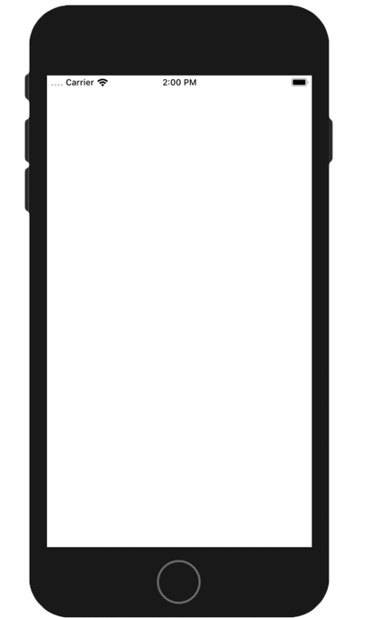

You need Android Studio 3.4+ for the Android part of the tutorial.
The Kotlin plugin 1.3.41 or higher should be installed in the IDE. This can be verified via Language & Frameworks | Kotlin Updates section in the Settings (or Preferences) window.
Optionnal for mac user : For the iOS part of the tutorial, you need a macOS 10.14+ host with Xcode 10.3+ and the tools installed and configured.
Let's check that everything is well configured !
Clone the workshop project repository :
git clone https://github.com/mlumeau/workshop-kmp.git
Checkout the branch step_one_setup :
cd workshop-kmp
git checkout step_one_setup
This project contain an Android app, a library and an iOS project.
Launch the Android Studio IDE and open the project.
The project should sync and you should be able to compile and run the Android application on an emulator or a real device.
Let's check that it works!
You should see a blank screen : 
For Mac users only (optionnal) :
First you have to prepare the framework for iOS
./gradlew :kore:packForXCode
It creates the directory kore/build/xcode-frameworks which contains a gradlew executable and the framework for Xcode.
Now you can open the project in Xcode
by opening the workspace file : ../workshop-kmp/iosApp/kosmos/kosmos.xcworkspace
You can now compile and run the project on an iOS emulator or on a real device.
You should see a blank screen : 